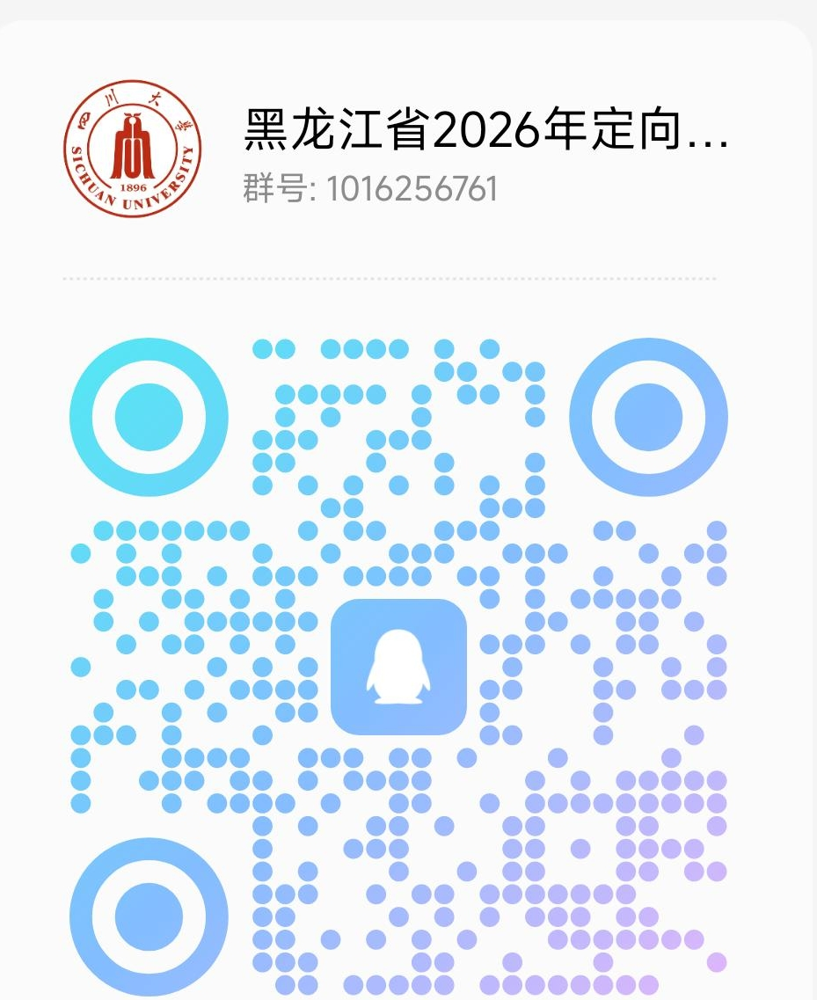

学院通知 · 考试安排
选调生丨黑龙江省2026年度定向选调应届优秀大学毕业生公告
发布时间：2025-09-08
为了方便后续相关事宜的通知，请有意向参加黑龙江选调的同学加入黑龙江省2026年定向四川大学选调生QQ群1016256761，进群请备注“学号-学历-姓名”。 为加强年轻干部队伍 “ 源头工程 ” 建设，引进高层次高素质优秀人才和急需紧缺专业人才，助力龙江高质量振兴发展，根据《中华人民共和国公务员法》《公务员录用规定》《关于进一步加强和改进选调生工作的意见》（组通字〔 2018 〕 17 号）等有关法律法规和政策规定，现将 2026 年度面向部分普通高校定向选调应届优秀大学毕业生（高校名单见附件 1 ）有关事项公告如下。 一、选调单位 1. 省直有关单位（见附件 2 ）。 2. 哈尔滨市、齐齐哈尔市、牡丹江市、佳木斯市、大庆市、鸡西市、双鸭山市、伊春市、七台河市、鹤岗市、黑河市、绥化市、大兴安岭地区市（地）直有关单位（见附件 3 ）。 3. 部分县（市、区）直有关单位（见附件 4 ）。 二、选调对象和条件 （一）选调对象 符合下列条件之一的在校应届毕业生，均可报考（不包含招录范围高校的定向培养、委托培养、独立学院、毕业后申请第二学士学位的应届毕业生，以及民办高等院校、各类成人教育、远程教育的毕业生）。 1. 招录范围的高校 2026 年在校应届全日制本科及以上学历、学士及以上学位优秀毕业生。 2. 全日制本科或硕士研究生毕业于招录范围高校（取得相应学历学位）， 2026 年在校（不含国 < 境 > 外院校）应届全日制硕士研究生或博士研究生。 （二）选调条件 1. 具有中华人民共和国国籍，且无国（境）外永久居留权，拥护中华人民共和国宪法。 2. 具有正确的政治立场和政治态度，认真学习习近平新时代中国特色社会主义思想，坚定拥护 “ 两个确立 ” ，坚决做到 “ 两个维护 ” ，在思想上政治上行动上同以习近平同志为核心的党中央保持高度一致，自觉践行社会主义核心价值观，爱党爱国、品行端正、诚实守信，有理想抱负和家国情怀，甘于为国家和人民服务奉献。 3. 学习成绩优良，专业知识扎实，能够按时获得相应学制的毕业证和学位证，研究生学历的须具有大学本科学历和学士学位。具有一定的组织协调、综合分析、语言表达和文字综合能力。应届本科、硕士毕业生应于 2026 年 7 月 31 日前取得相应毕业证和学位证，应届博士毕业生应于 2026 年 12 月 31 日前取得相应毕业证和学位证。 4. 符合下列四项条件之一： ① 中共党员（含预备党员）； ② 在本科或研究生学习期间至少连续半年担任过学生干部； ③ 在本科或研究生学习期间获得过校级以上奖励； ④ 具有参军入伍经历（上述条件计算时间截止到 2025 年 9 月 19 日），优先选调。 5. 年满 18 周岁以上（ 2007 年 9 月及以前出生），本科生年龄为 30 周岁以下（ 1994 年 10 月及以后出生），硕士研究生年龄为 32 周岁以下（ 1992 年 10 月及以后出生），博士研究生年龄为 35 周岁以下（ 1989 年 10 月及以后出生）。具有参军入伍经历人员年龄相应放宽 2 岁。 6. 具有正常履行职责的身体条件和心理素质，符合公务员录用体检标准。 7. 具备选调单位要求的其他资格条件。 8. 凡在校期间有违法违纪违规行为、学术不端和道德品行问题，曾受过各种处理处分人员，以及《中华人民共和国公务员法》和其他法律法规规定不得录用为公务员情形的，不得报考。报考人员不得报考录用后即构成回避关系的招录岗位。 9. 资格审查将贯穿选调工作全过程，如有隐瞒情况、冒名顶替、弄虚作假等行为，一经查实，按照有关规定取消报考、考试或录用资格。因重要档案材料不齐全等无法进行有效考察的，或经查实不符合选调资格条件的，不得确定为拟录用人选。 三、选调程序 1. 人选报名。 符合条件的学生于 9 月 5 日 8:30 至 9 月 19 日 17:30 ，登录 “ 黑龙江省选调生工作网 ” （ https//gongxuan.ljxfw.gov.cn ），点击 “ 考生报考入口 ” ，进入黑龙江省 2026 年度定向招录选调生报名系统（以下简称 “ 报名系统 ” ），注册并如实填写《黑龙江省 2026 年度定向招录选调生报名推荐表》（以下简称《推荐表》），并上传政治面貌、担任学生干部经历、获得校级以上奖励、参军入伍经历等相关证明材料彩色扫描件（ PDF 格式，分辨率 300dpi ），近期正面免冠证件照（红、蓝、白底均可， jpg 格式，利用图片软件制作的，照片宽高为 130×160 像素，分辨率 350dpi ，颜色模式为 24 位 RGB 真彩色）。每人填报一个志愿，须符合岗位报考条件，录取时视空岗情况调剂。 2. 资格审查。 黑龙江省选调生招录工作办公室将对照选调对象、选调条件和岗位报考条件进行资格审查。资格审查结果可通过报名系统查询，对不符合岗位报考条件的，考生可在报名时间内改报岗位。 3. 学校推荐。 通过资格审查的考生及时从报名系统打印 1 份《推荐表》（正反面）。学校党委组织部门、就业部门、院系党组织等要各负其责，对照选调标准和条件，严格把关，对考生的政治素质、道德品行、纪律表现、学业水平等作出实事求是评价。 考生在 9 月 22 日 17:30 前将 就业部门和院系党组织盖章的《推荐表》 正反面彩色扫描件（ PDF 格式，分辨率 300dpi ）上传到报名系统 ，未在规定时间上传的考生不能参加考试，《推荐表》纸质件待考察时由考察组收取。 4. 二轮选报。 2025 年 9 月 21 日 10:00 ，通过 “ 黑龙江省选调生工作网 ” 发布各招录岗位报名人数。通过资格审查的考生可登录报名系统，根据招录岗位报名情况进行二轮选报（仅能修改一次报考岗位信息，不能修改其他信息），二轮选报截止时间为 9 月 22 日 11:30 。二轮选报审核通过的，按调整后的志愿报考；审核未通过的，按原填报志愿报考。二轮选报审核结果可通过报名系统查询。 5. 笔试。 笔试科目为《综合素质测试》，满分 100 分，考试内容以行政职业能力测验和申论为主。笔试时间暂定 10 月中下旬（具体时间以 “ 黑龙江省选调生工作网 ” 通知为准），地点设在哈尔滨市。 2025 年 10 月上旬，考生可从报名系统下载和打印本人笔试准考证，未在规定时间下载笔试准考证的考生不能参加笔试。考生须持本人笔试准考证和身份证原件，到指定考点参加笔试（笔试时间、考点以笔试准考证注明为准）。笔试结束后，考生须在规定时间登录 “ 黑龙江省选调生工作网 ” 查询笔试成绩、合格分数线（请考生及时关注 “ 黑龙江省选调生工作网 ” 有关通知）。笔试成绩未达到合格分数线的考生，不再参加选调后续工作。 对缺考、违纪、零分三种情形有异议的考生，可在笔试成绩发布之日起 5 个工作日内，持本人笔试准考证和身份证原件到黑龙江省人事考试中心申请成绩复核，不受理其他情形成绩复核申请。 6. 面试。 采取结构化面试方式，满分 100 分，低于 60 分者不予录用，面试地点设在哈尔滨市。考生须持本人面试准考证和身份证原件到指定考点参加面试（面试时间、考点以面试准考证注明为准，请考生及时关注 “ 黑龙江省选调生工作网 ” 有关通知）。在报考同一岗位的考生中，按照面试人数与计划录用人数 3:1 比例，根据笔试成绩由高到低顺序由相关选调单位进行资格复审，确定各招录岗位参加面试人选。若按照比例确定的最后一名笔试成绩出现并列时，则符合条件的并列人员同时进入面试。资格复审时，出现招录岗位面试人选空缺的，可按笔试成绩依次递补到规定比例；不足规定比例的，在笔试合格分数线以上，按实际人数确定参加面试人选。资格复审由选调单位开展，以线上方式进行，考生须按要求提供本人相关材料。凡未在规定时间内参加资格复审的，或存在提供的材料信息不实影响报名资格审查等情形，选调单位有权取消考生参加面试资格。 考试成绩以 100 分计，按照笔试、面试成绩各占 50% 比例合成。 对参加面试的外地考生，面试所产生的往返交通费、住宿费和市内交通费予以适当补贴。 7. 考察和体检。 对参加面试的考生，依据优先选调条件进行综合素质评定（见附件 5 ），根据总成绩（总成绩 = 考试成绩 + 综合素质得分）确定考察体检人选。如总成绩相同，则以面试成绩高者排名列前；如总成绩、面试成绩均相同，则以笔试成绩高者排名列前。 考察由黑龙江省委组织部牵头，选调单位具体实施。考察主要了解考生政治素质、道德品行、学习成绩、遵纪守法、社会信用记录等情况，考察不合格的，取消选调资格。体检按照公务员录用体检标准和程序进行，由选调单位统一组织实施，体检费用由选调单位承担。 8. 公示和办理录用。 黑龙江省委组织部根据考察和体检等情况，研究确定拟选调人选，在考生所在学校公示 5 个工作日。根据公示情况，研究确定正式选调人员。 2026 年 7 月，正式选调人员毕业后，由黑龙江省委组织部统一办理公务员录用手续。在规定时间内未取得相应学历、学位的正式选调人员，将取消录用资格。 四、管理和使用 新招录的选调生试用期 1 年，试用期间在落编单位工作，试用期满考核合格后，按照中央组织部要求，省级机关选调生到基层锻炼时间不少于 2 年，并至少安排 1 年时间到村任职；市级及以下机关选调生到村任职时间为 2 年。选调生在村任职期间，履行大学生村官有关职责，按照大学生村官管理。 录用到艰苦边远地区的选调生，试用期工资可直接按试用期满后工资确定，试用期满后按国家政策规定确定级别工资。试用期满经考核合格的，办理转正手续；转正后在职数限额内，博士研究生任命为二级主任科员，硕士研究生任命为四级主任科员，本科生任命为一级科员；考核不合格的，报黑龙江省委组织部审核后，取消录用资格。 招录到省直单位的定向选调生，每人给予 1000 元 / 月的租房补贴，连续发放 5 年。招录到市（地）的定向选调生，享受当地人才引进优惠政策（见附件 6 ）。 选调生在黑龙江省最低服务年限为 3 年（含试用期），期间不得通过考录、借调等方式离开黑龙江省。 五、有关事项 选调考试不指定辅导用书，不举办也不委托任何机构举办考前辅导培训班。请考生在选调过程中保持通讯畅通，因个人原因未及时接到相关通知的，由考生本人承担相应后果。因不可抗力等因素，对招录等工作安排进行调整的，选调单位不承担任何法律责任。本公告由黑龙江省委组织部负责解释。 咨询电话： 0451—82833107 ； 18644052100 附件： 1. 黑龙江省 2026 年度定向招录选调生高校名单 2. 黑龙江省 2026 年度定向招录选调生岗位计划表（省直） 3. 黑龙江省 2026 年度定向招录选调生岗位计划表（市地直） 4. 黑龙江省 2026 年度定向招录选调生岗位计划表（县市区直） 5. 黑龙江省 2026 年度定向招录选调生报考须知 6. 黑龙江省各市（地） 2026 年度定向招录选调生优惠政策 7. 专业参考目录 四川大学就业指导中心 2025 年 9 月 点击此处： 附件下载 咨询群二维码：
